Tejados
¿Cuánto cuesta impermeabilizar un tejado en Mallorca? Guía completa 2025
Precio por metro cuadrado, factores que afectan al coste, materiales más usados en Mallorca y cómo elegir una empresa fiable.
Empresa local malloquina. Presupuesto gratis con visita en obra. Garantía escrita en cada trabajo. Especialistas en residencial, industrial y hotelero.
Soluciones definitivas para todo tipo de superficie en Mallorca

Aplicación de membranas y recubrimientos de alta durabilidad para tejados planos e inclinados. Eliminamos filtraciones definitivamente.

Terrazas, balcones y cubiertas transitables. Sistemas líquidos y láminas que aguantan el tráfico y el clima mediterráneo de Mallorca.

Tratamientos hidrofugantes y recubrimientos elastoméricos para fachadas. Protección contra la humedad y mejora de la imagen del edificio.

Experiencia probada en proyectos de gran envergadura: hoteles, naves industriales, parkings y comunidades de propietarios.
Transparencia total. El precio final depende del estado de la superficie, acceso y materiales — pero aquí tienes una referencia honesta.
Limpieza, tratamiento previo y membrana impermeabilizante. Incluye garantía de 10 años.
Sistema líquido o lámina para terrazas con tráfico. Incluye impermeabilización + acabado.
Hidrofugante o elastomérico según el estado. Ideal para edificios con humedades en paredes.
💡 Presupuesto sin compromiso: Visitamos tu obra, evaluamos el estado real y te damos un precio exacto y por escrito — sin sorpresas. Pide visita gratis →
Resultados reales de obras en Mallorca. Sin filtros, sin teatro.


850 m² de tejado con filtraciones múltiples. Aplicación de membrana de poliuretano in-situ. Sin interrumpir la actividad de la nave.


Terraza principal con fallos de impermeabilización que generaban humedades en habitaciones. Sistema líquido aplicado en 3 jornadas durante temporada baja.


Fachada sur con humedades por capilaridad y grietas superficiales. Saneado previo + elastomérico transpirable. El cliente lleva 2 años sin ningún problema.
Resultados reales de nuestros proyectos de impermeabilización en Mallorca
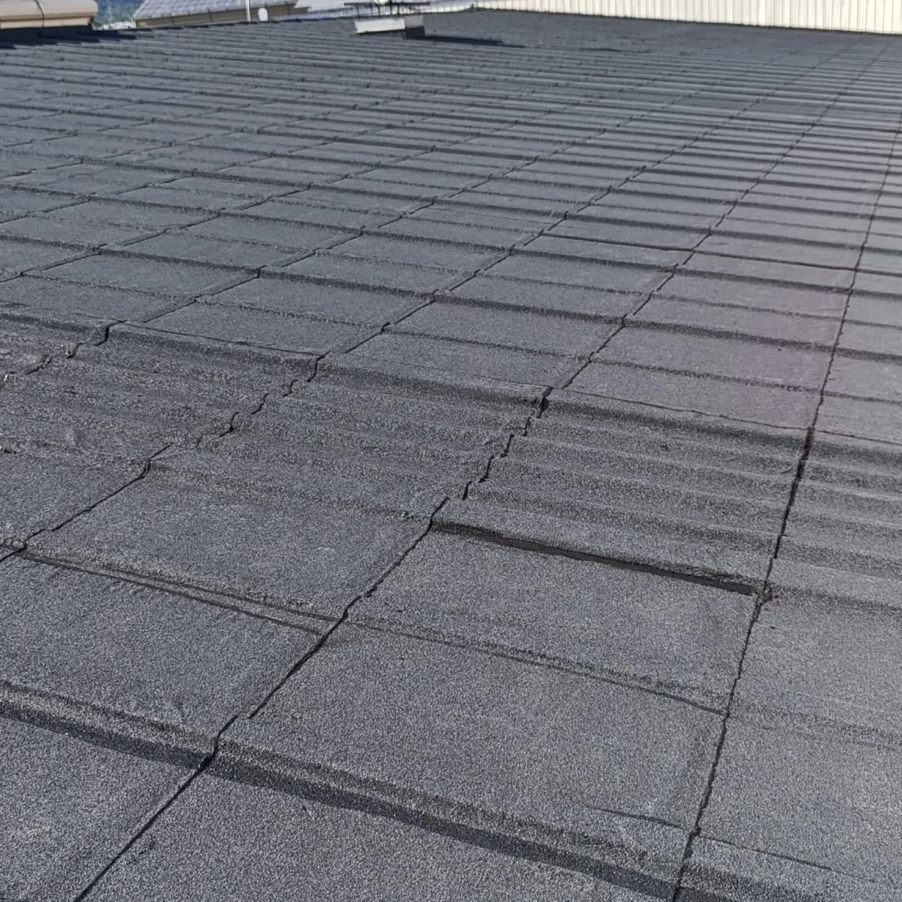
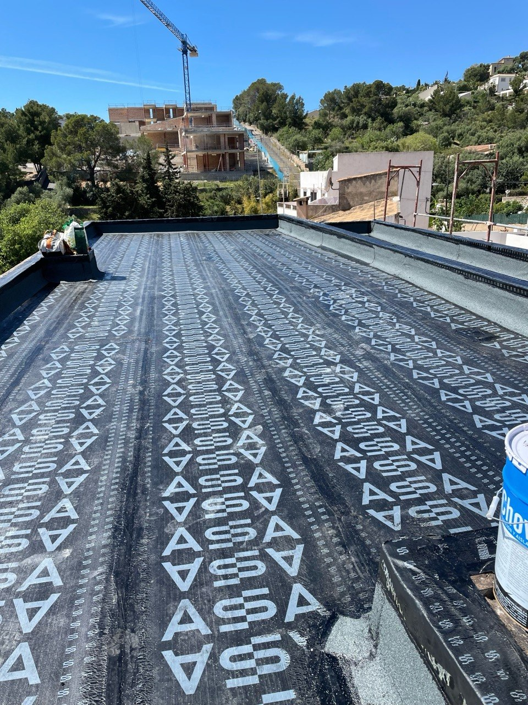
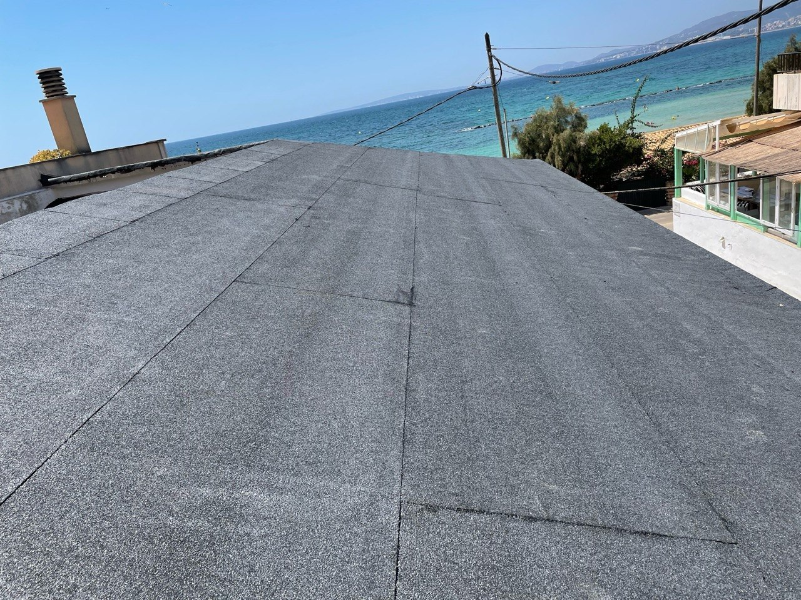
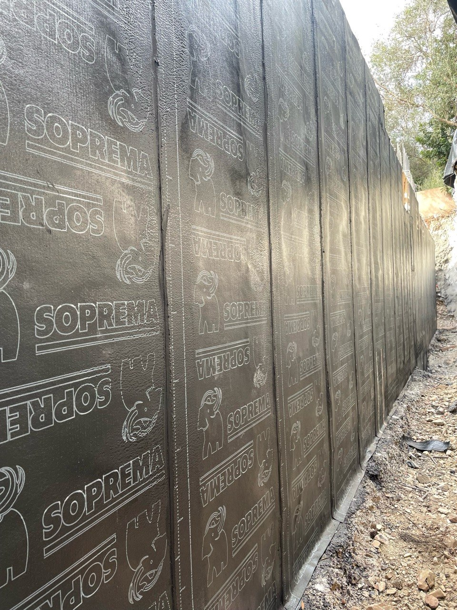
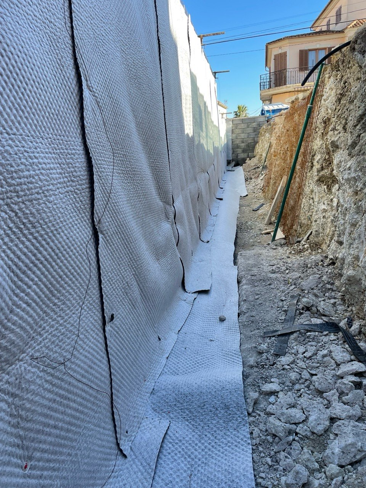
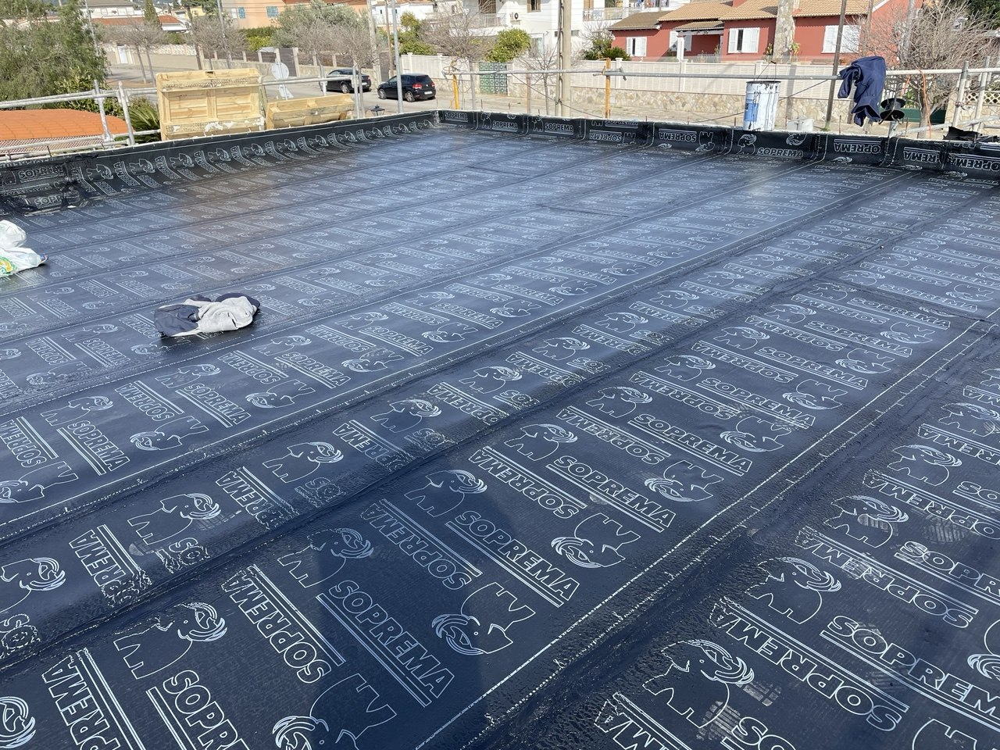
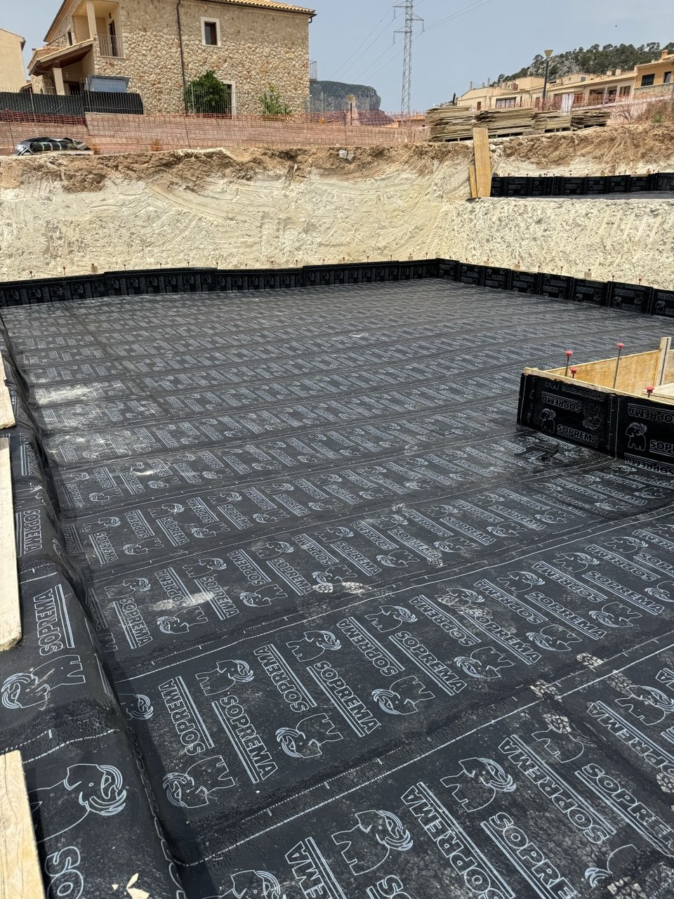
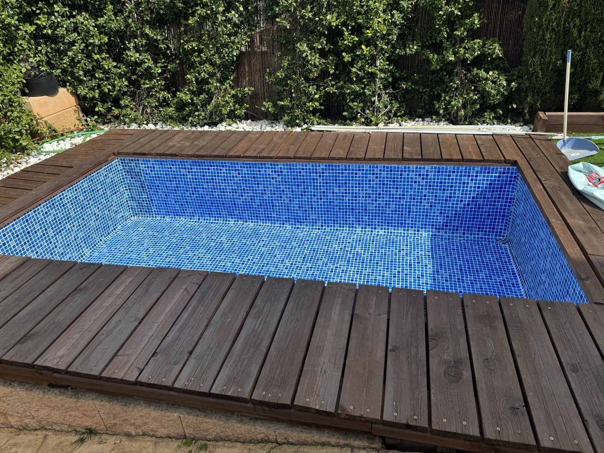
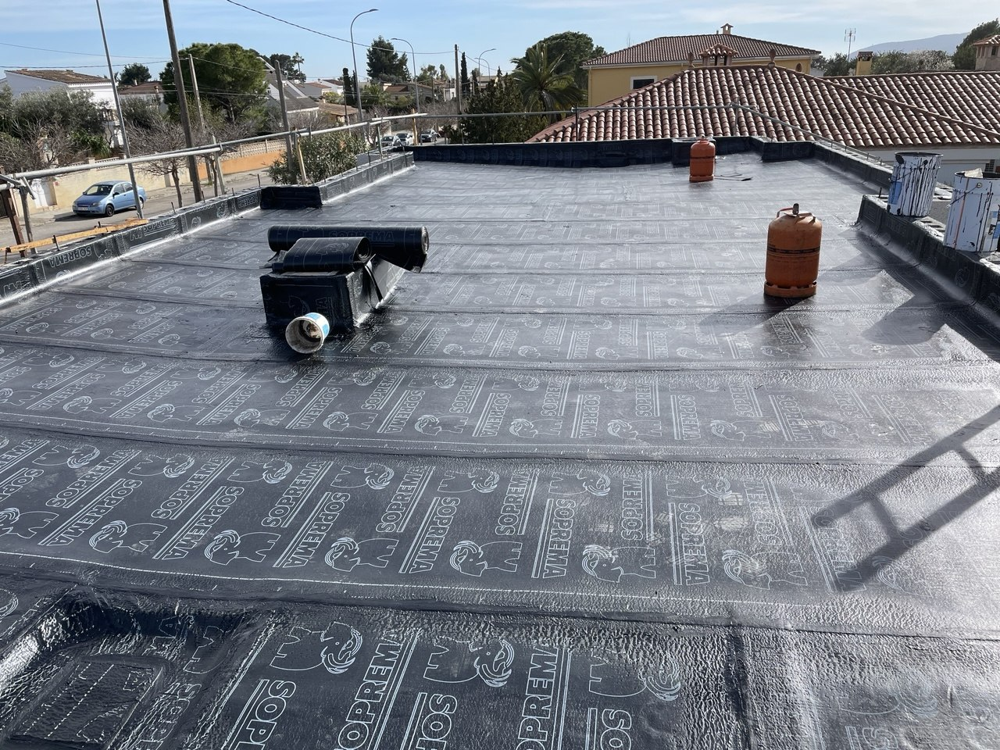
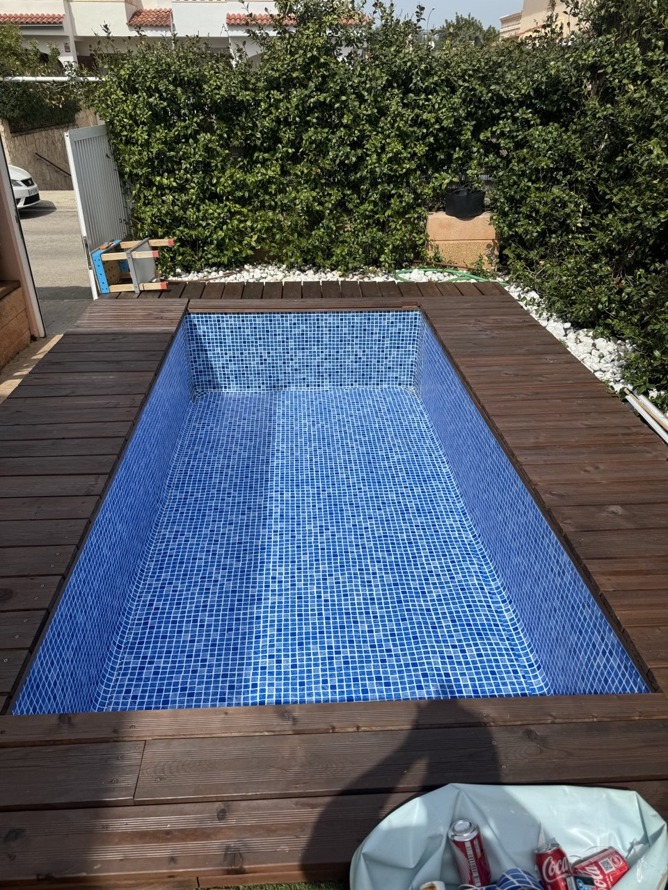
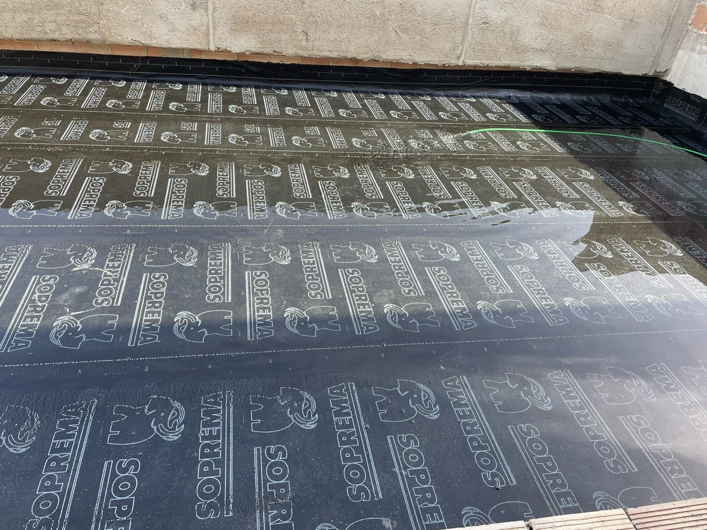
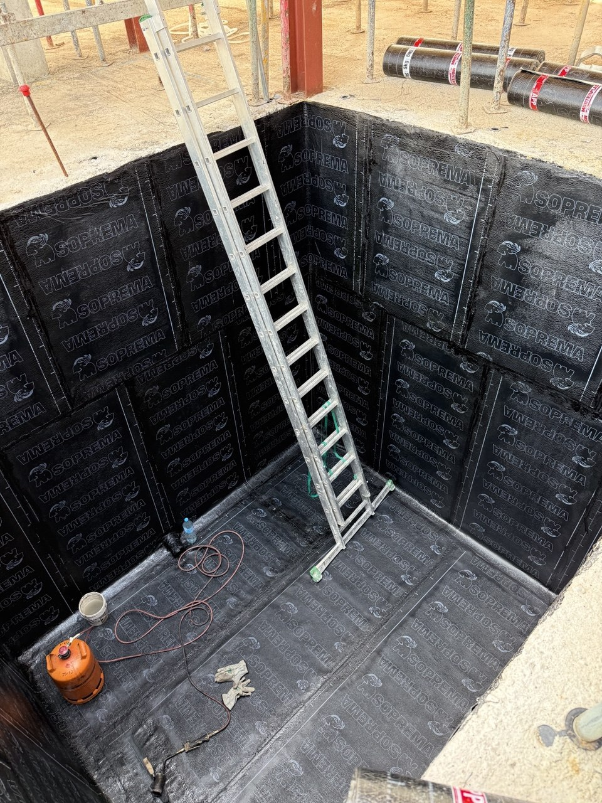
No prometemos verbalmente. Lo firmamos.
Al finalizar cada trabajo, entregamos un documento de garantía firmado donde especificamos exactamente qué está cubierto, durante cuánto tiempo, y cómo activarla si surge cualquier incidencia.
Al terminar la obra recibes un certificado con los detalles de la garantía, materiales utilizados y condiciones.
Si durante el período de garantía aparece cualquier filtración relacionada con el trabajo realizado, la reparamos sin coste adicional.
Respuesta en menos de 48 horas ante cualquier incidencia. Sin burocracia, sin excusas.
No somos una empresa de la península. Estamos aquí, en la isla, y podemos acudir rápido cuando nos necesitas.
Reseñas verificadas de Google
"Llevábamos 3 años con goteras en el tejado de la nave. Zavala lo solucionó en 4 días y ya han pasado 2 años sin ningún problema. El presupuesto fue exacto, sin sorpresas."
"Contratamos la impermeabilización de toda la terraza del hotel antes de temporada. Puntuales, limpios, sin molestar a los huéspedes. Y la garantía escrita da mucha tranquilidad."
"Me llamó un vecino recomendándoles. Vinieron a ver la terraza el mismo día que llamé. Presupuesto en 24h, obra en una semana. Así se trabaja."
Información útil para propietarios y administradores en Mallorca
Precio por metro cuadrado, factores que afectan al coste, materiales más usados en Mallorca y cómo elegir una empresa fiable.
Comparativa de precios reales, los errores más comunes y por qué el precio más barato puede salirte caro a largo plazo.
Manchas en el techo, burbujas en la pintura, olor a humedad... Aprende a detectar los síntomas antes de que sea un problema mayor.
Nos desplazamos a ver el trabajo, evaluamos el estado real y te damos un precio exacto y por escrito. Sin compromiso.